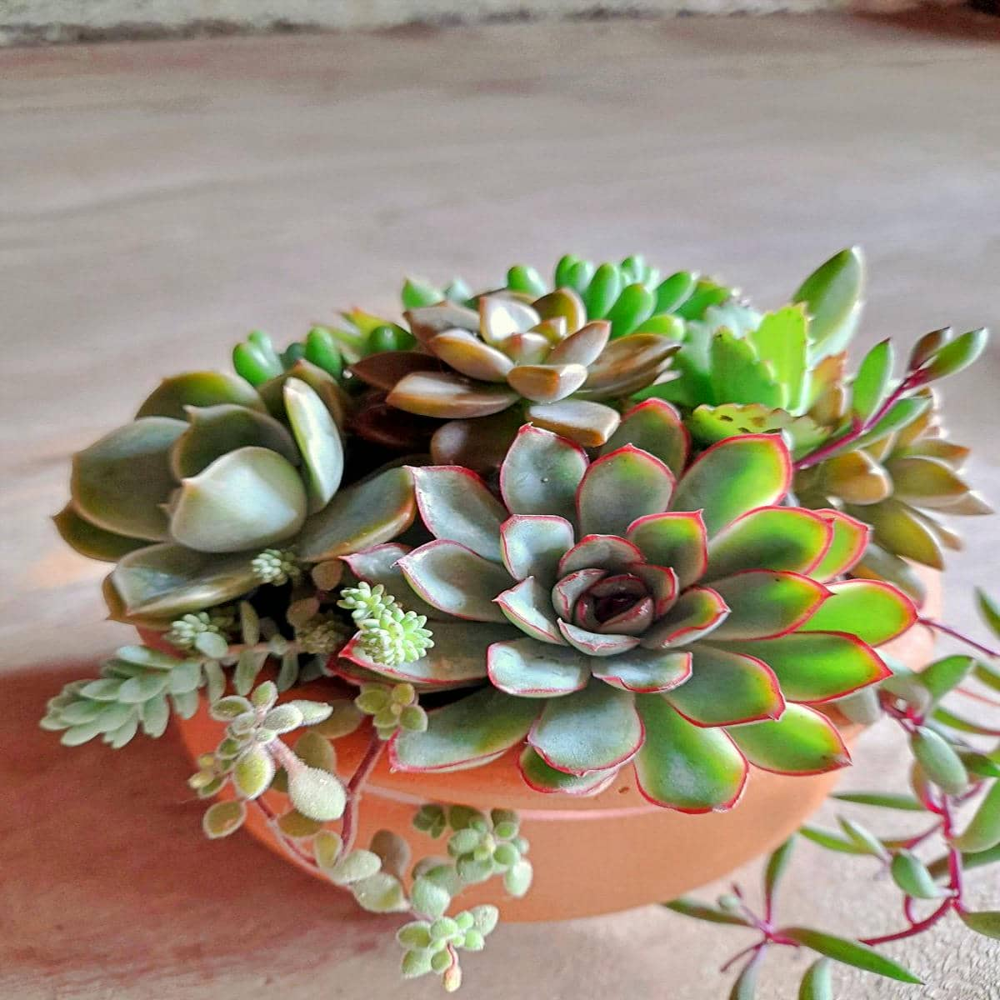
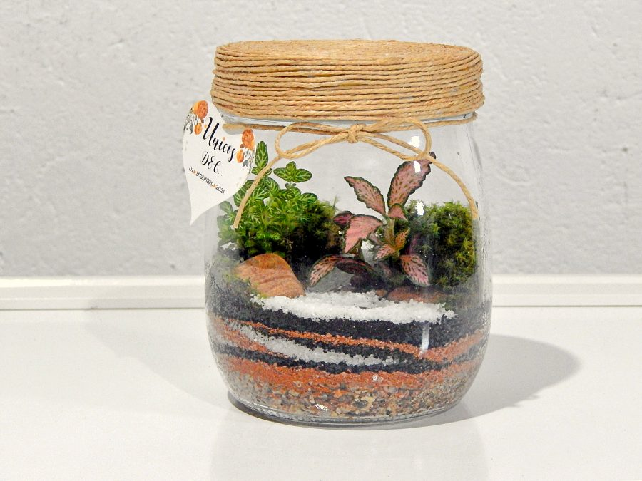
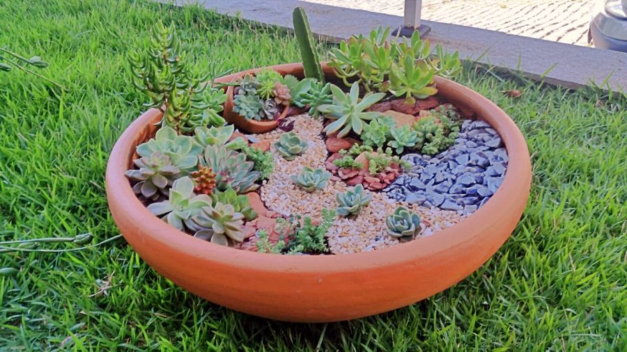
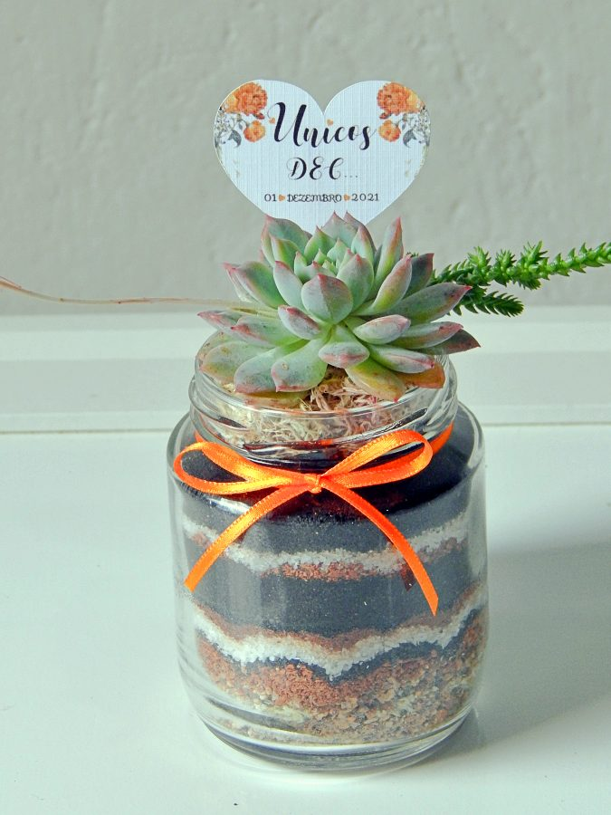

Our Services
Explore our artistic offerings and landscaping expertise.
Custom Succulent Arrangements, Terrariums & Mini Gardens
Each piece is hand-designed using seasonal succulents in sustainable containers — perfect for gifts, décor, or personal enjoyment. This includes stunning terrariums and mini garden compositions.



Event Decoration & Souvenirs
Beautiful, natural centerpieces and custom plant souvenirs for weddings, baby showers, and corporate gatherings.
Landscape Design Consulting
Transform outdoor spaces into sustainable sanctuaries with our design expertise in drought-tolerant and artistic landscapes.